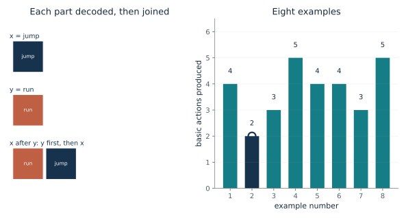
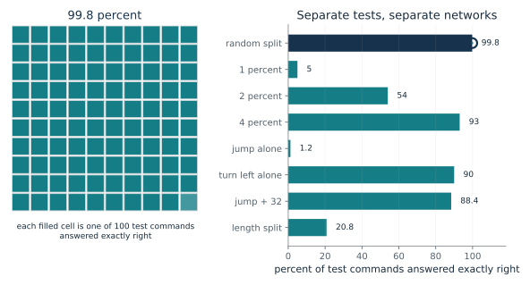
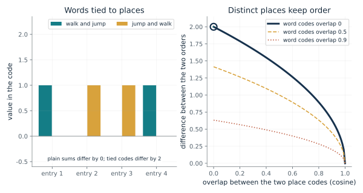
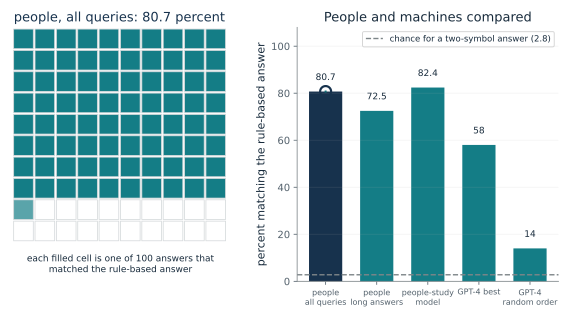
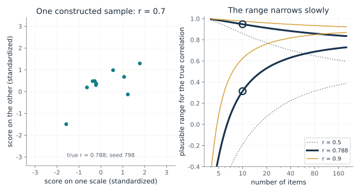
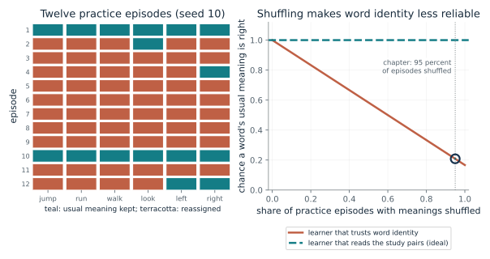
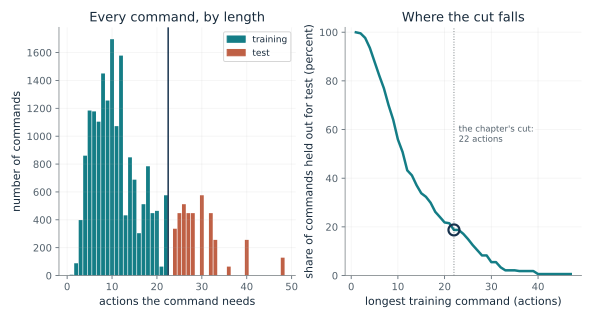

How does a short rulebook decode a command it never saw?
From Chapter 10, A small language with a rulebook
A command joins 'jump twice' and 'walk left' with 'after'. What are the actions, in order, and why does the second part come first?
Each part is decoded on its own from the word meanings. The joining word then decides the order: 'and' keeps the written order and 'after' performs the right-hand part first. Because the rules apply to any parts, a combination never seen before decodes as easily as a familiar one.
Predict first: Decode 'jump twice after walk left' yourself. Which two actions come first, and does 'after' put the left or the right part first?

Example command: 1
What happens: x = jump twice gives jump, jump; y = walk left gives turn left, walk. 'After' puts y first, so the result is turn left, walk, jump, jump, four actions from two parts of two actions each.
'jump after run' splits into x = 'jump' (1 actions) and y = 'run' (1), and the joining word orders them. The result is run, jump. A lookup table would need 20,910 rows; the rulebook stores 13 word meanings and the rules.
- Actions produced
- 2
- Parts decoded separately
- 2
- Rows a lookup table needs
- 20,910
- Words whose meaning is stored
- 13
The rulebook is the bar a learner is held to: it handles any combination of known words correctly by design, so a network's failure on a new combination is a failure to find the rules, not a gap in the data.
The chapter makes no brain claim here; the rulebook is not a model of how a person represents grammar.
The rulebook is a specification, written by a designer, that decodes the artificial language exactly.
Show the calculation
[[x]] = jump; [[y]] = run. For 'after': [[x after y]] = [[y]] then [[x]] = run, jump. Total 2 actions. Table rows = 20,910.
The equations and symbols
- [[x]]
- the list of basic actions that command x specifies
- ||
- joins two action lists, the left one performed first
- x, y
- the two commands joined by 'after'
A finite language with no recursion and unambiguous commands. The rulebook is a specification of the artificial language, not a claim about how a person or a trained network represents grammar.
Check your understanding: Decode 'jump after run'. Then say how many rows a lookup table would need for all commands of this language.
Book source: Chapter 10, A small language with a rulebook. Illustration C10-D01. Formula. Book formula and worked example (Figure 10.1). The 13 words, 6 actions and 20,910 commands are the chapter's. The rules for 'thrice', 'opposite' and 'around' are the companion's reconstruction, checked by reproducing the chapter's counts (D02 and D07). The lookup-table comparison is constructed, as the chapter says.
Why does a score of 99.8 percent not settle whether a network composes?
From Chapter 10, The word that stayed alone
A network scores 99.8 percent on a random split of the commands. What would you expect it to score on commands that compose a word it saw only alone?
The same kind of network learns a lot from a small share of commands and nearly all of them from a random split, yet it fails on composed commands when a word was only ever seen alone. The 'turn left' word occurs inside many training commands, and composing it scored about 90 percent. Adding 32 composed examples lifted the jump score to 88.4 percent, still described as far from systematic.
Predict first: The network was right on 99.8 percent of a random split. Predict its score on commands that combine 'jump' with other words when jump appeared in training only by itself.

Which test: 0
What happens: On the composed jump commands the best design scored 1.2 percent, though it scored 95 percent or better on its own training commands. The failure was invisible in the random split.
On 'random split, 80 percent to train' the chapter reports 99.8 percent exact matches. The bars come from different networks on different held-out commands, so there is no single score for the model. The random split alone would have made the networks look fine.
- Reported score (percent)
- 99.8
- Test commands
- 4,182 (20 percent)
- Network
- top architecture
A smooth answer to a familiar command proves nothing about a new one. The test has to hold out the combination.
No people were tested on SCAN; the authors wrote only that they suspect people would not have problems.
These are measured scores of 2018 recurrent networks, reported by the authors, not a model of behavior.
Show the calculation
Score = 100 x (commands answered exactly) / (commands tested). Held out: a random fifth of the commands. Of 20,910 commands, 80 percent is 16,728 to train and 4,182 to test. Composed jump commands counted from the grammar: 7,706.
The equations and symbols
- score
- percent of test commands whose whole action sequence was exactly right
- held out
- the commands kept out of training and used for the test
Each bar is a different network on a different held-out set. The chapter notes the paper reports no combined score. The study tested 2018 recurrent networks only, and no people.
Check your understanding: A random split sends 80 percent of 20,910 commands to training. How many are left to test, and what share of 100 test commands does a score of 1.2 percent represent?
Book source: Chapter 10, The word that stayed alone. Illustration C10-D02. Reported result. Reported result. All scores are quoted from the chapter (Lake and Baroni 2018, recurrent networks). The test counts 4,182, 7,706 and 3,920 follow the chapter's 80 percent split, its jump count and its length split; the 7,706 is also recounted from the grammar. Nothing is simulated.
How can a sum of word codes remember order?
From Chapter 10, The word that stayed alone
Two commands use the same two words in opposite order. Does a plain sum of word codes tell them apart, and what changes if each word is tied to its place first?
Adding word codes is order-free, so both orders give one total. Multiplying each word's code by its place's code before adding gives a different total for each order, by exactly the difference of the words times the difference of the places. If either difference is zero, the two orders collapse again.
Predict first: If the two place codes were identical, would the tied sums still tell the two orders apart? Predict before moving the slider to 1.

Overlap between the two word codes: 0 · Overlap between the two place codes: 0
What happens: With unrelated word codes and unrelated place codes the tied codes differ by 2, the largest possible here, while the plain sums differ by 0. Slide the place overlap to 1 and the difference falls to 0.
A plain sum of word codes gives 'walk and jump' and 'jump and walk' the same total, so their difference is 0. Tying each word to its place first gives a difference of 2 at word overlap 0 and place overlap 0; if the two place codes are identical, order is lost again.
- Plain-sum difference
- 0
- Tied-code difference
- 2
- Order kept
- yes
Whether a network holds a sentence as a sum or as words in places changes which questions it can answer, and the chapter treats the binding idea as a proposal, not a finding.
Nothing here is measured in a brain. The chapter says people's understanding depends on order and grouping, but gives no brain evidence for binding.
The tied code is a specification of a representation proposed in 1990, not a model of what trained networks do.
Show the calculation
Difference = |f_walk - f_jump| x |r1 - r2| = sqrt(2(1 - 0)) x sqrt(2(1 - 0)) = 1.41 x 1.41 = 2. Plain sum: (f_walk + f_jump) in both orders, difference 0.
The equations and symbols
- f_p
- the code (list of numbers) for word p
- r_1, r_2
- codes for the first and second place
- b
- the code for a command: each word's code times its place's code, added
- overlap
- cosine between two unit codes; 0 means unrelated, 1 means identical
Two content words, two places, and unit-length codes in a plane. Real networks learn their own codes; this shows only why a sum without places loses order and what tying words to places restores.
Check your understanding: Word overlap 0 and place overlap 0.5. By the formula, how much do the tied codes differ for the two orders?
Book source: Chapter 10, The word that stayed alone. Illustration C10-D03. Constructed example. Constructed example. The chapter's Figure 10.3 is a schematic of this contrast and cites Smolensky's 1990 proposal; the codes here are made-up two-number vectors. The closed form for the difference is the companion's algebra. The chapter says the sources do not test whether binding explains the jump failure.
How close did machines come to people on the colored-circle task?
From Chapter 10, A language of colored circles
People mostly gave the rule-based answer. A model was trained on a mixture set near 80 percent rule-based. Predict whether it scored below, near or above the people, and how GPT-4 did.
People applied the rule in most answers and still made patterned mistakes: one circle per word, or keeping the written order on the word that reverses it. The model was shaped to match the overall rate, so the interesting comparison is the kind of error. GPT-4 did worse and was badly hurt by shuffling the order of the examples.
Predict first: The model was trained with about 80 percent rule-based targets to match people's 80.7. Predict whether its score was below, near or above 80.7, and whether GPT-4 reached it.

Who answered: 0
What happens: The people-study model scored 82.4 percent, near the people's 80.7, as designed. GPT-4 reached 58.0 percent at best and 14.0 with the examples in random order. The model's errors differed: more than half were one circle per word, against about a quarter for people.
People, all queries matched the rule-based answer 80.7 percent of the time, 0 points from the people's 80.7. The people-study model was trained on a mixture set to 80 percent rule-based to approximate people, so its closeness is by design. Nothing here shows that people and models err for the same reasons.
- Matches the rule-based answer (percent)
- 80.7
- Points from people's 80.7
- 0
- Basis
- 25 people, one online study
- Errors of one circle per word
- about a quarter (10 of 41 errors)
A score alone does not say how a learner gets there. The pattern of mistakes is a second test, and here it separated people from the model.
People are known from behavior only, in one online study of 25 people. Their answers are a model target here, not a measurement of how a brain composes.
The transformer is a trained model; its scores are measured outputs on this task, not a specification.
Show the calculation
Percent = 100 x matching answers / answers. Recounted from the archive the chapter cites: people gave 176 of 217 exact answers = 81.1 percent (paper: 80.7), and 29 of 40 on the two longest queries = 72.5 percent. One-circle-per-word errors: 10 of 41 = 24.4 percent.
The equations and symbols
- rule-based answer
- the answer a fixed set of rules gives; the authors call it the algebraic standard
- chance
- 2.8 percent for a two-symbol answer with the length known
One online study of 25 people with no brain measurement. The people-study model's training target was chosen to approximate human accuracy, so the closeness is by design. The GPT-4 and model scores are dated 2023 and may not describe later models.
Check your understanding: People gave 176 exact answers out of 217. What percent is that, and how does it compare with the paper's 80.7?
Book source: Chapter 10, A language of colored circles. Illustration C10-D04. Reported result. Reported result, quoted from the chapter (Lake and Baroni 2023 and its supplement). The counts 176 of 217, 29 of 40 and 10 of 41 are the chapter's archive recount. The model's score is the most systematic of ten runs, sampled. Nothing is simulated here.
How much does a correlation from ten items settle?
From Chapter 10, A language of colored circles
A model's score on each of ten instructions tracked how hard people found them, with a correlation of 0.788. If that came from ten items, what range of true correlations is still plausible?
Fisher's transform makes the spread of a correlation roughly constant, about 1/sqrt(n - 3). A 95 percent range is the transform of r plus and minus 1.96 of that spread, converted back. Quadrupling the items only halves the width of the transformed range.
Predict first: Predict the low end of the plausible range for 0.788 from ten items. Is it close to 0.788, to 0.5, or lower?

Number of items: 10 · Measured correlation: 0.788
What happens: The range runs from about 0.31 to 0.95. Even a correlation that looks strong from ten items leaves a true value near 0.3 plausible. With 160 items the same r would be pinned to about 0.72 to 0.84.
A correlation of 0.788 measured on 10 items is compatible with a true value anywhere from 0.314 to 0.948. The range narrows only as the square root of the item count. The chapter says ten items are few; this range is the companion's own illustration, not a figure from the paper.
- Measured correlation
- 0.788
- Items
- 10
- 95 percent range
- 0.314 to 0.948
- Range width
- 0.633
A single correlation is easy to over-read. Knowing how wide the range is keeps a model-versus-people comparison honest.
The difficulty ratings come from behavior of 25 people online, not from a brain measurement.
The model's per-instruction scores are measured outputs; the range here is a statistical approximation about the measurement.
Show the calculation
z = atanh(0.788) = 1.07; half-width = 1.96/sqrt(10 - 3) = 0.741. Range = tanh(z -/+ half-width) = 0.314 to 0.948.
The equations and symbols
- r
- the correlation measured on the items, 1 being a perfect match
- n
- the number of items
- z
- Fisher's transform of r, whose spread is approximately 1/sqrt(n - 3)
The usual approximation: items behave like a random sample from a bivariate normal population. Ten instructions are not a random sample, so the range is a guide to how loose the number is, not a verdict.
Check your understanding: For n = 10, what is the half-width in the transformed scale, and what range follows for r = 0.788?
Book source: Chapter 10, A language of colored circles. Illustration C10-D05. Formula (companion's own illustration). The 0.788 and the ten items are the chapter's, which says ten items are few. The Fisher interval is the companion's own addition, not in the chapter or paper. The scatter is a constructed sample with a disclosed seed, not the study's data.
Why does shuffling word meanings make a model read the examples?
From Chapter 10, Shuffling word meanings
If 95 percent of practice episodes reassign what six words mean, how often is a word's usual meaning right, and what does a learner have to do instead?
If a word's meaning is reassigned in most episodes, memorizing that meaning gets it wrong most of the time. The study pairs in the episode always give the current meaning. A learner that reads them can then answer a new word shown once, such as jump with one example.
Predict first: At 95 percent shuffling, predict how often a word keeps its usual meaning. Is it closer to 5 percent, 20 percent or 50 percent?

Share of episodes shuffled: 0.95
What happens: A word keeps its usual meaning with chance 0.05 + 0.95/6 = 0.208, so trusting word identity is wrong about four times in five. Reading the study pairs is the only way to do well, and the reported effect on add jump was a fall in error from 99.27 to 0.22 percent.
When 95 percent of practice episodes reassign the six word meanings at random, a word keeps its usual meaning with chance 0.208. Trusting word identity pays little, and reading the study pairs pays fully. Reported add-jump error fell from 99.27 to 0.22 percent (five-run averages).
- Episodes shuffled
- 95 percent
- Chance a word keeps its usual meaning
- 0.208
- Possible reassignments of 6 words
- 720
- Of 12 shown, with every word unchanged
- 2
Much of the teaching in the chapter's method is done by the training schedule, not a new network design. The authors call the many-grammar training not developmentally plausible.
The authors do not claim a child learns this way; nothing here is a brain measurement.
The schedule is a training procedure; the simulated learner is an idealization, not the transformer.
Show the calculation
Chance a word keeps its meaning = (1 - p) + p/6 = (1 - 0.95) + 0.95/6 = 0.208. Reassignments of six items = 6! = 720. Assumes a uniform random one-to-one reassignment, which is the companion's reading of 'reassigned'.
The equations and symbols
- p
- the share of practice episodes in which the meanings are reassigned
- 6
- the six words (jump, run, walk, look, left, right) whose meanings are shuffled
- 6!
- the number of ways to reassign six items one-to-one
A uniform random one-to-one reassignment of the six words' meanings, and an idealized learner that reads the study pairs perfectly. This illustrates the pressure of the training schedule; it is not a model of the network or a measurement.
Check your understanding: At 50 percent shuffling, what is the chance a word keeps its usual meaning?
Book source: Chapter 10, Shuffling word meanings. Illustration C10-D06. Simulation. Simulation. The 95 percent, the six words and the 10 study pairs per episode are the chapter's. The uniform one-to-one reassignment and the seed 10 are the companion's assumptions for the illustration; the chapter says only that the meanings were reassigned. The reported add-jump errors, 99.27 and 0.22 percent, are the chapter's.
What does a length split hold out?
From Chapter 10, Longer than practiced
Train on commands that need up to 22 actions and test on the rest. How many commands is that on each side, and does the cut matter?
Decoding gives each command a length. Cutting at a length sends all commands above it to the test set, so every test command is longer than any training command. Moving the cut shows how the held-out share changes, and that no command needs exactly 23 actions.
Predict first: The chapter trains on commands that need up to 22 actions. Predict how many of the 20,910 go to the test set: closer to 1 in 100, 1 in 5, or 1 in 2?

Longest training command (actions): 22
What happens: 3,920 of the 20,910 commands, about 1 in 5.3 (18.7 percent), need 24 to 48 actions and form the test. The top network scored 20.8 percent, and 100 percent error for the meta-trained model; this is a different skill from learning a new word.
Training on commands that need up to 22 actions leaves 16,990 to train on and 3,920 to test, the longest needing 48. At the chapter's cut of 22 the counts are 16,990 and 3,920. The chapter reports 20.8 percent for the top architecture, 100 percent error for the meta-trained model and 99.7 percent for least-to-most prompting on this split.
- Training commands
- 16,990
- Test commands
- 3,920
- Share held out
- 18.7 percent
- Longest command (actions)
- 48
The chapter calls this skill productivity and says it is largely distinct from systematicity. A model can pass a new-word test and still fail on length.
No brain evidence is involved; people were not tested on the length split.
The reported scores are for separately trained 2018 and 2023 models, and one large pretrained model with worked examples reached 99.7 percent by a different route.
Show the calculation
Count commands whose rulebook output has at most 22 actions: 16,990; the rest, 3,920, are test. Check: 16,990 + 3,920 = 20,910. No command needs exactly 23 actions, so cuts of 22 and 23 give the same split.
The equations and symbols
- L
- the longest command allowed in training, in basic actions
- |[[c]]|
- the number of basic actions command c produces
The rules for 'thrice', 'opposite' and 'around' are the companion's reconstruction, supported by matching the chapter's counts. Other cut points are the companion's variations on the chapter's single split.
Check your understanding: At the chapter's cut, what do the two counts add to, and what share is held out?
Book source: Chapter 10, Longer than practiced. Illustration C10-D07. Constructed example (computed from the rulebook). Computation. Command lengths come from decoding all 20,910 commands with the rulebook of D01, which reproduces the chapter's 16,990 training and 3,920 test commands and the 48-action maximum. The reported scores quoted in the summary are the chapter's.
Mathematical illustrations use the book's formulas with disclosed small examples. Each interactive choice shows a result computed from the same calculations as the chapter notebook. A simulation is not a measurement, and for a brain the mathematics is a model: a picture illustrates a result, and the assumptions determine its scope. Review copy, brain-computer partnership revision of 1 november 2026.